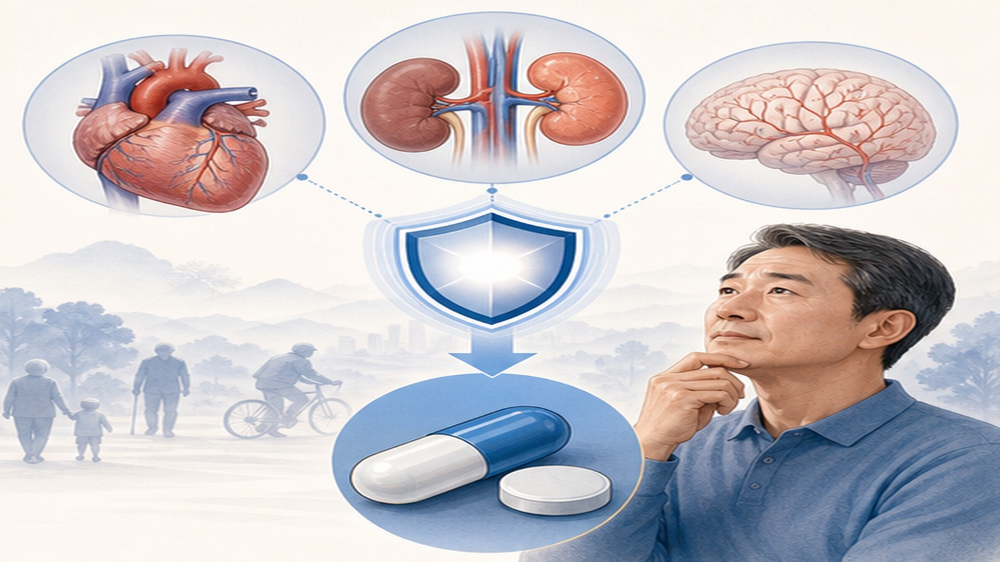
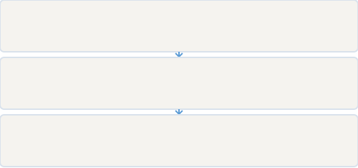

2017년 분류는 유지하되, 약물치료 시작 기준이 더 빨라지고 가정혈압이 더 중요해졌습니다
진료실·가정·활동혈압의 측정 조건
| 측정 | 기준 |
|---|---|
| 진료실 | ≥140/90 mmHg |
| 가정 | ≥135/85 mmHg |
| 24시간 활동혈압 평균 | ≥130/80 mmHg |
심전도 전압 자체를 약 추가의 목표로 삼지 않는다
미국 지침의 진료실 혈압(2회 이상 평균) 분류 — 가정혈압은 국내 기준 135/85 이상이 고혈압
| 구분 | 위 혈압 | 아래 혈압 | 이렇게 하세요 |
|---|---|---|---|
| 정상 | 120 미만 | 80 미만 | 생활습관을 유지하고 정기적으로 측정합니다. |
| 혈압 상승 | 120~129 | 80 미만 | 생활습관을 점검하고 매년 평가합니다. |
| 1기 고혈압 | 130~139 | 80~89 | 위험도에 따라 생활습관 관리와 약물치료를 결정합니다. |
| 2기 고혈압 | 140 이상 | 90 이상 | 생활습관 관리와 약물치료를 함께 시작합니다. |
| 중증 고혈압 | 180 이상 | 120 이상 | 증상이 있으면 응급실, 증상이 없어도 신속히 외래에서 평가받습니다. |
새 지침도 가정혈압을 핵심 근거로 봅니다 — 자세한 측정법은 가정혈압 안내문을 드립니다
Life's Essential 8 — 가장 강력한 단일 인자는 체중·식이·운동의 조합
진료실 밖 혈압으로 확인하고 심혈관 위험·동반질환을 함께 평가합니다

서로 다른 연구의 효과를 개인별 예상치로 합치지 않는다
| 연구·대상 | 목표·시점 | 주요 결과 |
|---|---|---|
| SPRINT · 50세 이상 · 9,361명 | SBP <120 대 <140 mmHg · 당뇨 제외 | 심혈관 사건 25% 감소 |
| STEP · 60–80세 · 8,511명 | SBP 110–<130 대 130–<150 mmHg | 심혈관 사건 26% 감소 |
| BPROAD · 2형 당뇨병 | 목표 SBP <120 mmHg · 달성 121.6 대 131.9 mmHg | HR 0.79 (95% CI 0.69–0.90), P<0.001 |
단일 약물보다 저용량 2가지 병용이 더 효과적·부작용 적음
65세 이상 재향군인 13,523명 · 중앙 추적 2.4년
| 항목 | 클로르탈리돈 | HCTZ |
|---|---|---|
| 비교 용량 | 12.5 또는 25 mg | 25 또는 50 mg |
| 주요 복합 결과 | 702명 (10.4%) | 675명 (10.0%) |
| 저칼륨혈증 | 6.0% | 4.4% |
| 칼륨 <3.1 mEq/L | 5.0% | 3.6% |
| 사망 / 저나트륨혈증 | 6.6% / 5.4% | 6.6% / 5.4% |
기전이 다른 저용량 병용과 성분별 적응증

| 임상 맥락 | 소개한 성분 |
|---|---|
| 심부전 | 발사르탄·칸데사르탄·로사르탄 |
| 뇌졸중 | 로사르탄 |
| 당뇨병성 신병증 | 로사르탄·이르베사르탄 |
| 혈관 보호·심방세동 이차 예방 | 텔미사르탄 |
고혈압 진단부터 안정 목표 도달까지의 표준 일정
ADL·IADL 독립성과 말기 노쇠를 구분한다
| 기능 상태 | 강의에서 소개한 목표 |
|---|---|
| 기본 ADL·도구적 IADL 독립 | <130/80 mmHg |
| IADL 도움 필요: 전화·쇼핑·요리 등 | SBP <140 mmHg |
| 기본 ADL 도움 필요: 목욕·옷 입기 등 | SBP <150 mmHg |
| 말기·매우 심한 노쇠 | SBP 140–160 mmHg · 개인별 설정 |
증상이 있으면 응급실, 증상 없이 매우 높으면 신속히 외래 진료
KSH 2022 vs 2025 AHA/ACC — 일반 환자 목표 차이를 함께 검토
강의의 비교; 지침별 적용 조건을 유지한다
| 지침·대상 | 목표·조건 |
|---|---|
| KSH 2026 · 합병증 없는 노인 | <140/90 mmHg |
| KSH 2026 당뇨·심혈관·CKD·뇌졸중 | <130/80 mmHg 기본 · ≥65세 고위험 SBP <130 mmHg 고려 |
| ESC 2024 · 18세 이상 85세 미만 | SBP 120–129 mmHg · 내약성 고려 · <120 mmHg 피함 |
| ESC 2024 · ≥85세 | SBP <140 mmHg |
| AHA/ACC 2025 | <130/80 mmHg |
강의 시점의 고혈압 적응증과 심부전 급여를 구분한다
진단 직후부터 시작할 수 있는 구체적 행동
QR로 다시 보기 · 집에서 재는 법과 기록지는 가정혈압 안내문을 드립니다